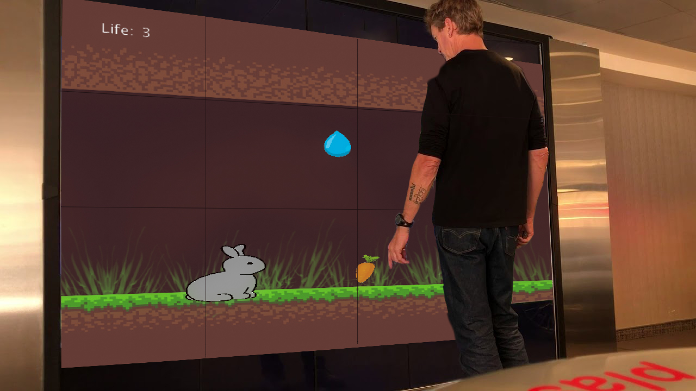

Development based on project 1---Rabbit in the Rain. Apply what I learned in this term to adds on to project 1. Making the game more interactive and more challenging for the players.
A complex system of interconnected elements represented visually; a hardware interface with 3 inputs which communicates with the visual components and effects them directly or indirectly.
My inspiration of this project actually comes from my own experience, When I was young, I had a little bunny as pet. My mom always told me if the bunny get wet, it might dies, so I won't be naughty to hurt it. So the game is based a this made-up worldview called "rabbit dies when it gets wet". When i first made this game for my project1, it was super easy and also messy at the same time, but later I learnedc more about python and processing over the terms, and now putting user interaction as the priority.
I'm aiming to challenge myself to apply all the various prototyping concepts and practical approaches that I've learned this term into one Python + Processing game. Making the game to have intuitive interaction and actually being fun is the success metrix for this project.
This is a slide potentiometer, so instead of turning it as a normal knob, I want to have it slidable side by side for the rabbit to move.
The button here is to lead other movements of the rabbit, for example when user press it, the rabbit will jump.
For this project, I've been using a lot of things like processing, particle.io, python, the use of photon, particle board, slide potentiometer and button. I use the photon particle board to collect data about if there's any interaction inputs, like if any button is pressed, and a breadboard, we've been using this for the past 2 projects as well, its been used as holder of all the sensors.
Using a diagram to think about how to make the game and each component better, in the meantime.digging into different possibilities.
Before i add anything new, I make the previous code object oriented—for help me to better modify all the datas.
in order to let the users feel more engaged, I want them to have the feeling of having control. So i use the sensors, which is potentiometer and button, to replace the previus mouseX and mouseY.
Before, the rabbit can only move left and right. In order to make it more interesting, i added a jumping function to it and have the carrot here, is making the game more challenging for users.
If I have more time in the future, I would love to further develop it. One way I wanna do since we were learning the use of different sensors like motion sensor and IR sensor, I think it would be much more engaging to let the users control the position of the rabbit by moving their own body, and with their body moving to control the rabbit in a big screen, players can feel the sense of control and feel the needs of "oh ya i need to save this rabbit's life."
